image 3 — a photograph (376 × 345)
A grayscale photograph of a puppy lying on a bed, stored as a standardised matrix (mean 0, standard deviation 1). This is the case that behaves like real image compression: the information is spread across many components, and the interesting question is how few you can get away with.
Size: n = 376 rows × p = 345 columns · ‖X‖F = 360.2 · Variance in PC1: 61.8% · k for 95% / 99% of variance: 10 / 33
1. The original and its first ten approximations
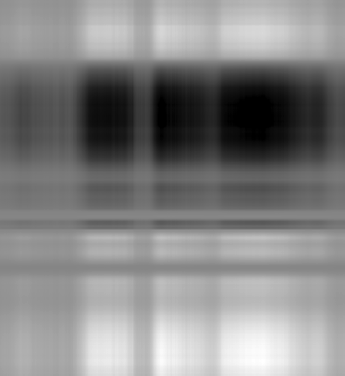
k = 1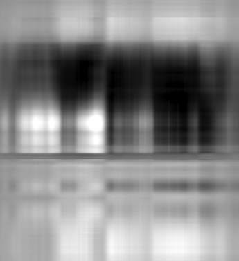
k = 2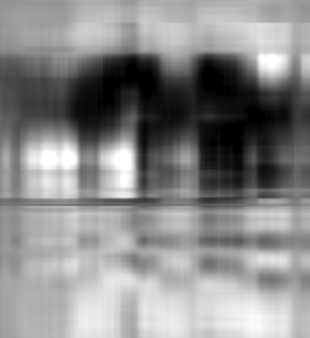
k = 3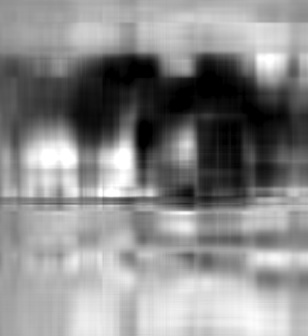
k = 4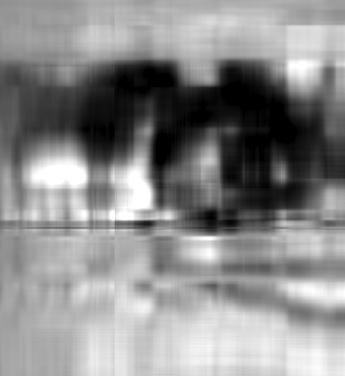
k = 5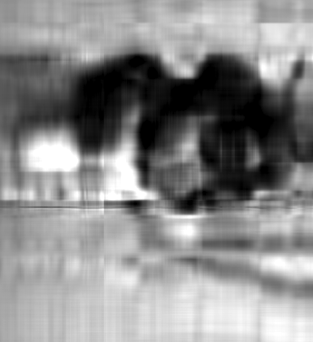
k = 7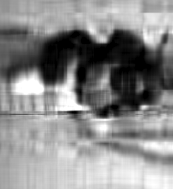
k = 8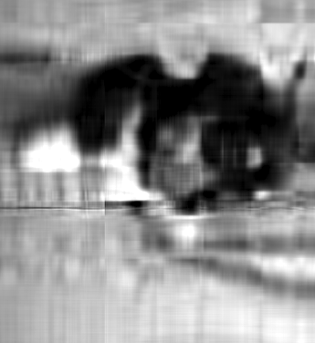
k = 9The progression is very legible. k = 1 gives only horizontal bands of brightness, k = 2–4 add the large dark mass of the puppy, and somewhere around k = 8–10 the shape becomes identifiable as an animal. Fine detail — the eye, the ear boundary, the fold of the sheet — arrives between k = 15 and k = 30, and the vertical streaking that betrays a low-rank reconstruction has largely disappeared by k = 50.
Beyond k = 10
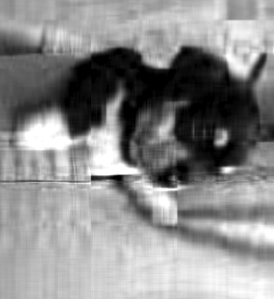
k = 15Grayscale mapping: for every panel of this image, black and white are pinned to the 2nd and 98th percentile of the original matrix, so all panels are directly comparable and a few extreme pixels cannot wash the rest out.
2. Approximation error against k
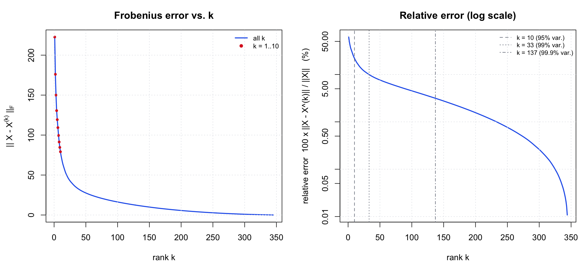
A textbook decay: steep for the first ten components, then a long slow tail. 95% of the variance is reached at k = 10, 99% at k = 33, and 99.9% only at k = 137. Note how much slower the visual quality improves than the variance number suggests — at k = 10 the image is already at 95% of the variance but still visibly blurry, which is a good reminder that the Frobenius norm weights large bright regions much more heavily than the small high-contrast details the eye looks for.
| k | ‖X − X(k)‖F | relative error | cumulative variance | numbers stored | vs. original |
|---|---|---|---|---|---|
| 1 | 222.67 | 61.82% | 61.78% | 721 | 0.6% |
| 2 | 176.02 | 48.87% | 76.11% | 1,442 | 1.1% |
| 3 | 150.01 | 41.65% | 82.65% | 2,163 | 1.7% |
| 4 | 130.59 | 36.26% | 86.85% | 2,884 | 2.2% |
| 5 | 119.30 | 33.12% | 89.03% | 3,605 | 2.8% |
| 6 | 109.32 | 30.35% | 90.79% | 4,326 | 3.3% |
| 7 | 99.59 | 27.65% | 92.35% | 5,047 | 3.9% |
| 8 | 91.36 | 25.37% | 93.57% | 5,768 | 4.4% |
| 9 | 84.59 | 23.49% | 94.48% | 6,489 | 5.0% |
| 10 | 79.13 | 21.97% | 95.17% | 7,210 | 5.6% |
| 15 | 60.57 | 16.82% | 97.17% | 10,815 | 8.3% |
| 20 | 49.56 | 13.76% | 98.11% | 14,420 | 11.1% |
| 30 | 38.16 | 10.60% | 98.88% | 21,630 | 16.7% |
| 50 | 27.56 | 7.65% | 99.41% | 36,050 | 27.8% |
| 345 (full) | 0.00 | 0.00% | 100.00% | 129,720 | 100.0% |
3. The first eigenvector and the first PC score
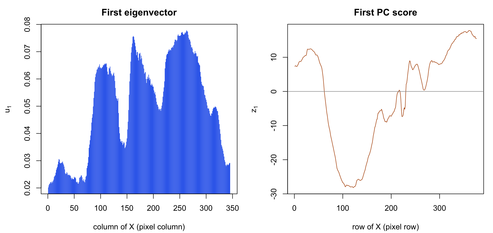
Interpretation
The first eigenvector is a column-brightness profile. Every loading has the same sign, rising from 0.020 at the left edge to a maximum of 0.078 around columns 255–265. It is not a picture of anything by itself; it is a weighting that says which pixel columns carry the most of the image's dominant brightness pattern (its correlation with the per-column energy √∑x2 is 0.91). The lowest loadings sit on the first few columns, the darkest part of the frame.
The first PC score is the row-brightness profile. z1 correlates 0.996 with the row means of X, so it is essentially "how bright is this row of the photograph". It is most negative near row 122 — the dark head and body of the puppy — and most positive near row 361, the brightly lit sheet at the bottom of the frame. Their outer product z1u1' is therefore the horizontally-banded image you see in the k = 1 panel: the correct vertical brightness profile, with no horizontal detail at all.
4. How large does k need to be?
k = 30. At that rank the relative error is 10.6% and 98.9% of the variance is retained; the puppy, the fold of the sheet and the background objects all read correctly, with only mild vertical streaking left. It costs 30 × 721 = 21,630 numbers against 129,720 in the original, a 6× reduction. k = 10 is enough to recognise what the picture is but is clearly blurry, and k = 50 (7.7% error) is close to indistinguishable from the original if you want headroom — still only 28% of the original storage. Past roughly k = 180 the representation stops being a compression at all, since k(n + p) exceeds n × p.